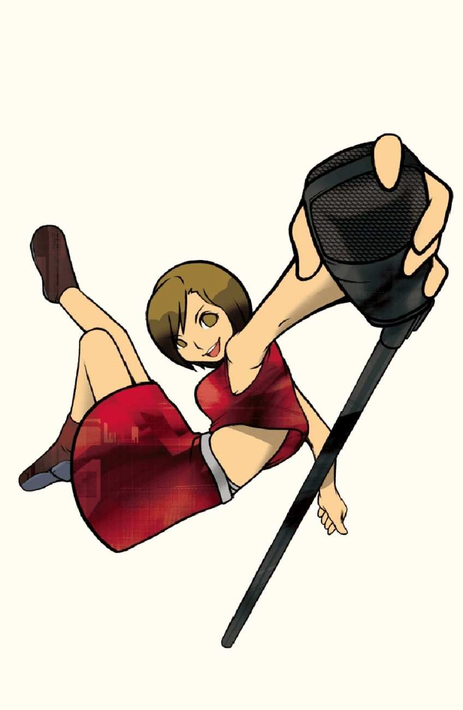
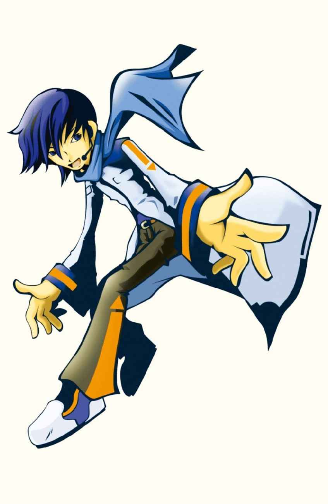
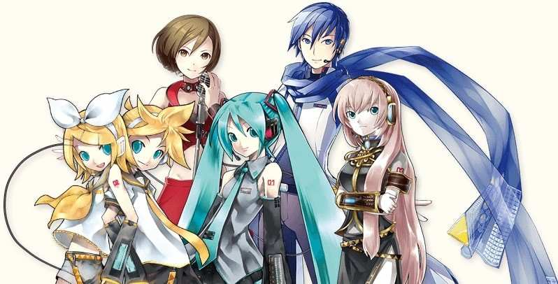

Vocaloid is a software created by Yamaha that enables users to synthesise singing by typing in the desired lyrics and melody.
It uses pre-recorded vocal samples called "voicebanks" to generate the singing voice.
Yamaha begins development of "Daisy", the foundation of Vocaloid.
First public debut at Musikmesse 2003.
VOCALOID(1) launches in 2004 with English libraries Leon and Lola, and Japan's Meiko.
Kaito is released in 2006 as the pioneering male Japanese vocal library.
Hatsune Miku debuts in 2007 with VOCALOID2, triggering massive fan activity.
development.exe
2009-2015
VOCALOID3 launches in 2011, with smoother vocals and multilingual support.
Mobile Vocaloid Editor releases in 2015.
Appears in mainstream games and “Cool Japan” projects.
maturity.exe
2016-2023
VOCALOID5 launches in 2018 with bundled voicebanks.
VOCALOID:AI debuts in 2019 using deep learning.
VOCALOID6 adds real-time plugins in 2023.
★ VOICEBANKS ★
What are Voicebanks? ⁀➴⊹ ࣪ ˖
Voicebanks are collections of pre-recorded vocal samples.
Each Vocaloid can have many voicebanks suited for different types of songs.
These samples are combined by the software to generate singing based on user-input lyrics and melodies.
Miku is the first Japanese vocaloid to be both developed and distributed by Crypton Future Media, Inc.
She was initially released in August 2007 for the VOCALOID2 engine and was the first member of the Character Vocal Series.
Overall, she is the most popular vocaloid and is well-loved by fans all over the world.
Kagamine Rin and Len are Japanese vocaloids that were developed and distributed by Crypton Future Media, Inc.
They were initially released in December 2007 for the VOCALOID2 engine as a pair of female and male voicebanks.
They are the second set of vocals for the Character Vocal Series.
Megurine Luka is a Japanese vocaloid that was developed and distributed by Crypton Future Media, Inc.
She was initially released in January 2009 for the VOCALOID2 engine and was the third member of the Character Vocal Series.
She was the first vocaloid designed to fully support producing vocals in both Japanese and English.
Illustrated by Shogo Washizu

MEIKO
Name: MEIKO ★ メイコ
Release Date: 5 November 2004
Voice provider: Meiko Haigō
MEIKO is a Japanese vocaloid that was originally developed by Yamaha Corporation and distributed by Crypton Future Media, Inc.
She was one of the 4 known "Project Daisy" vocals and was initially released in November 2004 as the first Japanese vocal library released for the first VOCALOID engine.
Illustrated by Takashi Kawasaki

KAITO
Name: KAITO ★ カイト
Release Date: 14 February 2006
Voice Provider: Naoto Fūga
KAITO is a Japanese vocaloid that was originally developed by Yamaha Corporation and distributed by Crypton Future Media, Inc.
He was one of the 4 known "Project Daisy" vocals and was initially released in February 2006 for the first VOCALOID engine.
★ PRODUCERS ★
What are Producers? ⁀➴⊹ ࣪ ˖
Vocaloid producers are musicians who create songs using Vocaloid software.
They utilise various voicebanks to compose and produce music.
These producers are the core of the Vocaloid community, contributing original songs that shape Vocaloid as a music genre.

Miku, Rin&Len, Luka illustrated by
KEI Garou
MEIKO, KAITO illustrated by
iXima
Here is a playlist of helpful videos that you can reference! Have fun!
★ EVENTS & CONCERTS ★
How are Vocaloid Concerts Like? ⁀➴⊹ ࣪ ˖
These concerts feature the vocaloids projected onto a screen to make it seem like they are there in person.
There will also be a live band playing onstage as well as back-up dancers in some cases.
There have been many Vocaloid events and concerts held across the years.
Below only lists down some of the most prominent events but
here
is a full list of official events if you want to delve deeper.
Miku Expo is a series of annual world tours organised by Crypton Future Media starring Hatsune Miku since 2014.
these tours are held to celebrate and showcase the virtual pop star and the creative culture surrounding her.
However, during the pandemic, virtual events were held instead.
In 2025, the Miku Expo will be held in Singapore for the first time.
The event is scheduled for November 19 at The Star Theatre.
Magical Mirai has been held annually since 2013 to celebrate Miku's birthday, usually taking place in Tokyo.
It is typically held on a weekend in late August or early September.
Along with the concert itself, there is also an exhibition that displays fan-made artwork, merchandise and interactive exhibits as well as a programming contest that'sbeen held annually since Magical Mirai's 10th anniversary.
The Snow Miku festival is an annual winter event that has been held in Hokkaido since 2010, featuring a winter-themed version of Hatsune Miku.
Each year, a new Snow Miku costume design is chosen through an online competition, with different themes each year.
It is held to celebrate Hokkaido's winter, with various events and attractions, including a large snow sculpture of Snow Miku as the central attraction.
The festival is closely linked to the Sapporo Snow Festival and also includes stage shows, merchandise sales, and even a Snow Miku-themed tram.
Concert Planner Minigame ⁀➴⊹ ࣪ ˖
Pick a song, stage lighting, and outfit for a Vocaloid concert!